正文
7 描述统计规律 1——概率论基础
7.1.3 概率和频率
例 7.3 抛硬币
抛掷 10 次硬币并计算正面朝上的次数，随着抛掷次数越多，在 Python 中编写程序观察事件发生的频率和概率之间的关系。
import random
def coin_trial():
"""
模拟抛掷 10 次硬币
"""
heads = 0 # 正面朝上的次数
for i in range(10):
if random.random() <= 0.5:
heads += 1
return heads
def simulate(n):
"""
模拟抛掷 10 * n 次硬币
"""
trials = []
for i in range(n):
trials.append(coin_trial())
return(sum(trials) / n)simulate(1)6.0
simulate(10)4.5
simulate(100)4.92
simulate(1000)5.053
simulate(10000)5.0029
simulate(100000)5.01412
7.4.1 离散型随机变量
例 7.13 求概率函数和概率分布函数
若某公司生产的某个产品中奖率是 50%, 求购买 4 个同样的产品中奖的概率函数和概率分布函数.(伯努利试验)
购买 4 个同样的产品为 n 重伯努利试验, 设随机变量 X 为中奖的奖品数, p 为中奖的概率, q 为不中奖的概率, 则概率函数, ,
| X 的取值 | 0 | 1 | 2 | 3 | 4 |
|---|---|---|---|---|---|
| 对应概率 |
概率分布函数如下
例 7.14 在 Python 中画出 例 7.13 的概率函数以及分布函数图
import numpy as np
from scipy import stats
import matplotlib.pyplot as plt
from matplotlib.font_manager import FontProperties
from collections import Counter
# rcParams 配置
plt.rcParams["font.sans-serif"] = ["Microsoft YaHei"]
# 为 True 时, 减号使用 unicode 编码而不是连字符号，请查看 http://en.wikipedia.org/wiki/Plus_and_minus_signs#Character_codes
plt.rcParams['axes.unicode_minus'] = False
def Discrete_pmf():
xk = np.arange(5) # X 所有可能的取值[0 1 2 3 4 5]
pk = (1 / 16, 1 / 4, 3 / 8, 1 / 4, 1 / 16) # 概率函数
# name: 实例名称 custm, values: 两个数组的元组_LIKE，可选
# (xk, pk) 哪里 xk 是整数，并且 pk 是介于 0 和 1 之间的非零概率吗？sum(pk) = 1。xk 和 pk 必须有相同的形状。
dist = stats.rv_discrete(name='custm', values=(xk, pk))
rv = dist.rvs(size=100) # rvs: 产生服从指定分布的 100 个随机数, 通过 size 给定随机数的大小
fig, (ax0, ax1) = plt.subplots(ncols=2, figsize=(10, 5)) # 将窗口划分为 ax0, ax1
ax0.set_title("概率函数")
ax0.plot(xk, pk, 'ro', ms=8, mec='r') # 画点, X 轴为 xk, Y 轴为 pk, 红色点图, 红点大小为 8, 红点颜色为 red
ax0.vlines(xk, 0, pk, colors='r', linestyles='-', lw=2) # 画线, 0 为 Y 轴最下方, 红色, 实线, 宽度为 2
for i in xk: # 标注数字
ax0.text(i, pk[i], '%.3f' % pk[i], ha='center', va='bottom')
ax1.set_title("分布函数")
pk1 = dist.cdf(xk) # cdf 累积分布函数
"""
rv 数据序列(绘制的直方图高度服从这个数据序列, 标注的数据并不准确?)
5 组(0 1 2 3 4),
density=ture 的意思是保证该面积的积分为 1
histtype: 直方图类型，‘bar’, ‘barstacked’, ‘step’, ‘stepfilled’
蓝色
透明度 0.75
cumulative=True 频率累加
"""
ax1.hist(rv, 5, density=True, histtype='step', facecolor='blue',
alpha=0.75, cumulative=True) # .hist 用于绘制直方图
for i in xk: # 标注数字
ax1.text(i, pk1[i], '%.3f' % pk1[i], ha='center', va='bottom')
print(Counter(rv))
if __name__ == "__main__":
Discrete_pmf()Counter({1: 30, 3: 30, 2: 28, 4: 7, 0: 5})
{kind=link}
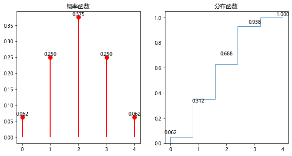
7.4.2 连续型随机变量
例 7.16 正态分布
在 Python 中输出正态分布概率密度函数和对应的概率分布函数
如果一个随机变量 X 具有概率密度函数, 则称随机变量 X 为正态分布随机变量, 并记为
下面代码模拟实现了一个均值为为 0 和方差为 1 的正态分布
import numpy as np
from numpy import pi
import matplotlib.pyplot as plt
import scipy.stats as stats
def test_norm_pmf():
mu = 0 # 均值为 0
sigma = 1 # 方差为 1
x = np.arange(-5, 5, 0.1) # 分布随机变量 x
fig, (ax0, ax1) = plt.subplots(ncols=2, figsize=(10, 5))
# 概率密度函数
y0 = (1 / ((np.sqrt(2 * pi) * sigma))) * np.exp(-(((x - mu) ** 2)) / (2 * sigma * sigma)) # f(x)
ax0.plot(x, y0)
ax0.set_title('Normal: $\mu$ = %.1f, $\sigma^2$ = %.1f' % (mu, sigma))
ax0.set_xlabel('x')
ax0.set_ylabel('概率密度函数 Probability density', fontsize=15)
# 概率分布函数
y1 = stats.norm.cdf(x, 0, 1) # F(x)
ax1.plot(x, y1)
ax1.set_title('Normal: $\mu$ = %.1f, $\sigma^2$ = %.1f' % (mu, sigma))
ax1.set_xlabel('x')
ax1.set_ylabel('概率分布函数 Cumulative density', fontsize=15)
fig.subplots_adjust(wspace=0.4)
plt.show()
if __name__ == "__main__":
test_norm_pmf(){kind=link}
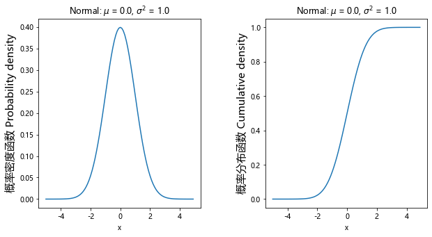
7.8 高手点拨
Python 有一个很好的统计推断包, 即 Scipy 中的 stats, 该模块包含了许多概率分布的随机变量, 以及多种常用的数据统计函数, 常用的统计函数如下:
| 概念 | 中文名 | 英文名 | 说明 |
|---|---|---|---|
| rvs | 产生服从指定分布的随机数 | Random variates of given size. | |
| 概率密度函数 | Probability Density Function | 连续性随机变量持有, | |
| pmf | 概率质量函数 | Probability Mass Function | 离散型随机变量持有, 就是离散性随机变量的分布律, |
| cdf | 累积分布函数 | Cumulative Distribution Fuction | 又称分布函数 |
| ppf | 百分点函数 | Percent point function | cdf 的反函数 |
| Sf | 残差函数 | Survival function | |
| stats | 返回期望和方差(mean(),var()) |
常见分布函数
| 名称 | 含义 |
|---|---|
| beta | beta 分布 |
| f | F 分布 |
| gamma | 伽马分布 |
| poisson | 泊松分布 |
| hypergeom | 超几何分布 |
| lognorm | 对数正态分布 |
| binom | 二项分布 |
| uniform | 均匀分布 |
| chi2 | 卡方分布 |
| cauchy | 柯西分布 |
| laplace | 拉普拉斯分布 |
| rayleigh | 瑞利分布 |
| t | 学生 t 分布 |
| norm | 正态分布 |
| expon | 指数分布 |
例 7.23 获得 norm 函数的使用说明
正态分布随机函数
from scipy import stats
from scipy.stats import norm
print(norm.__doc__)例 7.24 创建正态分布随机变量及绘图
from scipy import stats
from scipy.stats import norm
import numpy as np
import pylab as plt
X = norm()
Y = norm(loc = 1.0, scale = 2.0) # 正态分布期望 1.0, 标准差 2.0
t = np.arange(-10, 10, 0.01)
plt.plot(t, X.pdf(t), label='$X$', color="red")
plt.plot(t, Y.pdf(t), "b--", label="$Y$")
plt.legend()
plt.show(){kind=link}
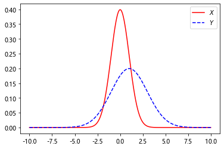
7.9 习题
(1) 泊松分布
已知某路口发生事故的概率是每天 2 次, 用 Python 编程求出此处一天发生 0、1、2、3、4 此事故的概率是多少？
, 其中 r 表示给定区间内发生事件的次数，表示每个区间的平均发生次数
| 0 | 1 | 2 | 3 | 4 | |
|---|---|---|---|---|---|
import numpy as np
from scipy import stats
import matplotlib.pyplot as plt
#解决中文显示问题
plt.rcParams['font.sans-serif']=['SimHei']
plt.rcParams['axes.unicode_minus'] = False
# 定义随机变量
mu4 = 2 # 平均值：每天发生 2 次事故
# 发生事故次数，包含 0 次，1 次，2 次，3 次，4 次事故
X4 = np.arange(0,5,1)
pList4 = stats.poisson.pmf(X4,mu4) # poisson 泊松, pmf 离散型随机变量分布律
print(pList4)
# 绘图
plt.plot(X4, pList4, marker='o', linestyle='None', alpha=0.75)
plt.vlines(X4, 0, pList4, alpha=0.75)
plt.xlabel('某路口发生 k 次事故')
plt.ylabel('概率')
for i in X4: # 标注数字
plt.text(i, pList4[i], '%.3f' % pList4[i], ha='center', va='bottom')
plt.title('泊松分布：平均值 mu=%i' % mu4)
plt.show()[0.13533528 0.27067057 0.27067057 0.18044704 0.09022352]
{kind=link}
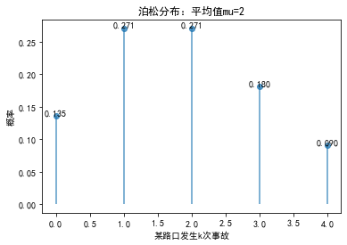
8 描述统计规律 2——随机变量与概率统计
-
从这章开始学的有点吃力了，原因是考研的数学二不考概统+本科期间概统没好好学。在重新看了几天川大徐后，开始入手。
-
我认为这本书在这里的排版不太好，与教科书的顺序一致，内容上也涉及了很多第 9 章的内容。
切比雪夫不等式
落入以均值为中心的邻域的概率不低于
8.2 大数定律和中心极限定理
8.2.1 大数定律
对命题"当大量重复某一相同实验的时候, 其最后的实验结果可能会稳定在某一数值附近"给予严格论证.
| 名称 | 描述 |
|---|---|
| 切比雪夫大数定律 | 独立不同分布, 当 n 充分大时, n 个相互独立的随机变量的算术平均值将比较密集地聚集在它的数学期望附近 |
| 辛钦大数定律 | 独立同分布(切比雪夫大数定律的推论) |
| 伯努利大数定律 | 一个事件 A 在 n 次独立重复实验中发生的频率依概率收敛于事件 A 发生的概率 p |
8.2.2 中心极限定理
在一定条件下, 充分多的相互独立的随机变量的算术平均值将服从正态分布, 不管这些随机变量本身服从什么分布.
| 名称 | 描述 |
|---|---|
| 列维——林德伯格 | 独立同分布 |
| 李雅普诺夫 | 独立不同分布 |
| 棣莫弗——拉普拉斯 | 二项分布，独立同分布的特殊情况，表明正态分布是二项分布的极限分布 |
定理 8.1 独立同分布的中心极限定理
前 n 项和
算数平均值
算术平均值的标准化
无论{}服从什么分布，当 n 很大时，其前 n 项的算术平均值的标准化{}服从正态分布 N(0,1)
定理 8.2 棣莫弗——拉普拉斯定理
设, 则当 n 很大时
-
我们曾用泊松分布近似地计算二项分布(时精确度较好), 而以上结论不受 p 值的大小限制
-
当时, 上述正态分布的近似程度可以达到比较满意的精度, n 越大, 精度越高.
例 8.13 验证中心极限定理
设有个随机变量相互独立,并服从, 则
import numpy as np
import matplotlib.pyplot as plt
import matplotlib as mpl
from scipy import stats
# 解决汉字显示
mpl.rcParams["font.sans-serif"] = ["Microsoft YaHei"]
mpl.rcParams["axes.unicode_minus"] = False
f = plt.figure(figsize=(16, 8))
mean, var = 0.5, 1.0/12 # [0, 1]范围内的均匀分布的均值和方差
def p_norm(nvr):
"""
绘制正态分布曲线
"""
mu = mean
sigma = np.sqrt(var/nvr)
norm_dis = stats.norm(mu, sigma) # 定义正态分布对象
norm_x = np.linspace(0, 1, 128) # 定义域
pdf = norm_dis.pdf(norm_x) # f(X)
plt.plot(norm_x, pdf, 'r', alpha=0.6, label='N(${0:.1f}, {1:.2f}^2$)'.format(mu, sigma))
plt.legend(loc='upper left', prop={'size': 8})
def sample(rv_num):
"""
对随机变量(X1+X2+...)进行一次采样
:return: 这些样本的平均值
"""
single_sample_dist = stats.uniform(loc=0, scale=1) # 定义[0, 1]上的均匀分布对象
x = 0
for j in range(rv_num):
x += single_sample_dist.rvs()
x *= 1 / rv_num
return x
def plotHist(Sample_num, rv_num, n_):
"""
画出 n 个随机变量和样本的直方图
:param Sample_num: 样本数目
:param rv_num: 随机变量的个数
:param n_: 图例序号
"""
x = np.zeros((Sample_num))
sp = f.add_subplot(2, 2, n_)
for i in range(Sample_num): # 采样 Sample_num 次
x[i] = sample(rv_num)
# 画出直方图
plt.hist(x, 500, density=True, color='#348ABD', label='{}个随机变量'.format(rv_num))
plt.setp(sp.get_yticklabels(), visible=False)
# 画出正态分布曲线
p_norm(rv_num)
if __name__ == "__main__":
Sample_num = 1000
nvr = ([1, 2, 32, 64])
for i in range(np.size(nvr)):
plotHist(Sample_num, nvr[i], i + 1)
plt.suptitle("服从均匀分布 U[0, 1]的多个随机变量和的均值逼近于正态分布")
plt.show(){kind=link}
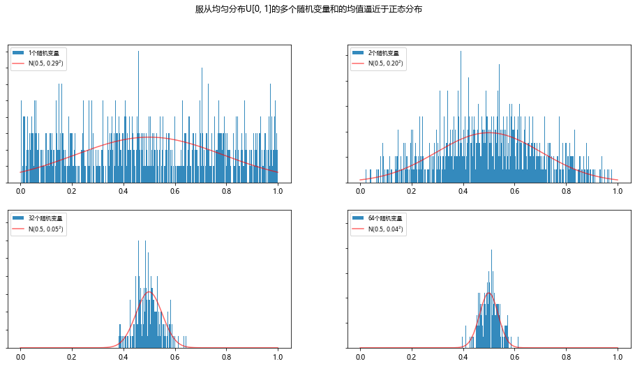
8.3 数理统计基本概念
-
在概率论中, 我们是在假设随机变量的分布已知的前提下去研究它的规律性, 但在数理统计中, 研究的随机变量分布是未知的
-
数理统计中, 通过对研究的随机变量进行重复独立地观察, 得到大量观察数据后进行统计分析(如数据是否服从某种分布, 其数据特征(数学期望, 方差等)如何, 从而对所研究的随机变量的分布做出种种推断)
8.4 常用的统计量
例 8.15 求样本的均值、方差和标准差的 3 种方法
import numpy as np
from math import sqrt
# 生成样本数据
nlist = range(0, 9_000_000)
nlist = [float(i) / 1_000_000 for i in nlist]
N = len(nlist)(1)定义法
sum1 = 0.0 # 样本数据之和
sum2 = 0.0 # 样本数据平方和
for i in range(N):
sum1 += nlist[i]
sum2 += nlist[i] ** 2
mean = sum1 / N # 平均值
var = sum2 / N - mean ** 2 # 方差 D(X) = E(X ^ 2) - [E(X)] ^ 2
std = sqrt(var) # 标准差 ^ 2 = 方差
mean, var, std(4.499999500000001, 6.750000000000028, 2.5980762113533213)
(2)借助 Numpy 的向量运算
narray = np.array(nlist)
sum1 = narray.sum()
narray2 = narray * narray # 就这?
sum2 = narray2.sum()
mean = sum1 / N
var = sum2 / N - mean ** 2
std = sqrt(var)
mean, var, std(4.4999994999999995, 6.749999999999915, 2.5980762113532996)
(3)借助 Numpy 函数
mean = np.mean(nlist)
var = np.var(nlist)
std = np.std(nlist)
mean, var, std(4.4999994999999995, 6.749999999999914, 2.5980762113532996)
8.4 最大似然估计(MLE)
-
对于已经出现的样本值,适当地选取参数, 使实验结果出现的概率最大
-
似然函数是不确定的, 是既定事实(模型已定, 参数未知)
-
发生的概率为
-
通过对求导等方式, 求出当为何值时, 发生的概率最大
-
参考视频: 【概率统计】最大似然估计
8.5 最大后验估计(MAP)
-
在最大似然估计的基础上, 添加了先验信息, 在样本较少时有用
-
, 先验项 + 与 MLE 等效, 利用求导等方式, 判断当为何值时, 原式最大
-
参考视频: 极大似然与最大后验的关系-贝叶斯法的视频超分辨率
8.6 综合实例 1——贝叶斯用户满意度预测
1.问题描述
根据一些已有的汽车汽车评测满意度测评数据集，可初步了解用户对于该类型汽车的满意程度。
2.数据准备阶段
| 特征属性 | 属性值 | 属性说明 |
|---|---|---|
| Buying | vhigh, high, med, low | 买入价 |
| Maint | vhigh, high, med, low | 维护费 |
| Doors | 2,3,4,5more | 车门数 |
| Persons | vhigh, high, med, low | 可容纳人数 |
| Lug-boot | small, med, big | 后备箱大小 |
| Safety | low, med, high | 安全性 |
import numpy as np
import random
import pandas as pd
# 列名 = [买入价, 维护费, 车门数, 可容纳人数, 后备箱大小, 安全性, 汽车类别]
columnsName=['buying', 'maint', 'doors', 'persons','lug-boot','safety','label']
def getDataSet(file):
"""
从数据集中获得数据
"""
fr = open(file)
rdata = []
for line in fr.readlines():
tmp = line.strip().split(',') # 这个文件以逗号分割数据
rdata.append(tmp)
df = pd.DataFrame(rdata) # 读入数据到 DATAFrame 变量 df，类似二维表
df.columns = columnsName # 设置 df 的列名
return df
def getTrainTest(data, trainNum):
"""
随机抽取数据,将数据集分成训练集和测试集
:return: 训练集, 测试集
"""
# 从 0 到 len（data）整数列表中随机截取 trainNum 个整数片段
"""
语法：random.sample(sequence, k)
参数：
sequence: 可以是一个列表，元组，字符串，或集合
k: 一个整数值，它指定一个样本的长度
返回：从序列中选择元素的 k 长度的新列表。
"""
choose = random.sample(range(len(data)), trainNum)
choose.sort()
j = 1
dftrain = pd.DataFrame(columns=columnsName)
dftest = pd.DataFrame(columns=columnsName)
for i in range(1,len(data)):
# 如果被随机选中，加入训练集，否则测试集
if (j < trainNum and i == choose[j]):
dftrain.loc[dftrain.shape[0]]=data.iloc[i]
j += 1
else:
dftest.loc[dftrain.shape[0]]=data.iloc[i]
return dftrain, dftest3.创建一个实现朴素贝叶斯模型的类 NBClassify
4.定义训练函数 train()
5.数据预测
class NBClassify(object):
"""
定义朴素贝叶斯模型
"""
def __init__(self):
# tabProbablity 核心字典，记录各类别的先验概率，格式：{'unacc':概率值, 'acc': 概率值, 'vgood': 概率值, 'good': 概率值}
_tagProbablity = None
# featuresProbablity 核心字典，记录各类别下各特征取值的条件概率。三级字典，
# 格式：类别 1: {'特征 1': {'值 1': 概率值, ...'值 n': 概率值}, '特征 2':{}...},类别 2：{'特征 1': {'值 1': 概率值, ...'值 n': 概率值},
_featuresProbablity = None
def train(self,df):
"""
4.定义训练函数
利用训练数据分别计算类先验概率和似然概率
"""
# value_counts: 查看 label 这一列的计数结果
self._tagProbablity = df['label'].value_counts(value for value in df['label'])
print("各类别的先验概率(各类别占比)：\n", self._tagProbablity)
# 计算各特征及对应取值的出现次数 dictFeaturesBase
# 格式：{特征 1:{值 1:出现 5 次, 值 2:出现 1 次}, 特征 2:{值 1:出现 1 次, 值 2:出现 5 次}}
dictFeaturesBase = {}.fromkeys(df.columns) # 创建一个字典
for column in df.columns: # 遍历数据各列
seriesFeature = df[column].value_counts()
dictFeaturesBase[column] = seriesFeature
# 从特征值字典删去类别信息
del dictFeaturesBase['label']
# 初始化字典 dictFeatures
# 格式：{类别 1:{'特征 1':{'值 1':None,...'值 n':None},'特征 2':{...}},类别 2：{'特征 1':{'值 1':None, ...},...}
dictFeatures = {}.fromkeys(df['label'])
for key in dictFeatures.keys():
dictFeatures[key] = {}.fromkeys([key for key in dictFeaturesBase])
for key, value in dictFeatures.items():
for subkey in value.keys():
value[subkey] = {}.fromkeys([x for x in dictFeaturesBase[subkey].keys()])
# 计算各类别、对应特征及对应取值的出现次数，存入字典 dictFeatures
for i in range(0, len(df)):
label = df.iloc[i]['label'] # df.iloc: 官方文档定义为“基于整数位置的索引，用于按位置进行选择。类别
for feature in columnsName[0:6]: # 对应的特征
fvalue = df.iloc[i][feature] # 对应的特征取值
if dictFeatures[label][feature][fvalue] == None:
dictFeatures[label][feature][fvalue] = 1 # 该类别下该特征值第一个出现的样本
else:
dictFeatures[label][feature][fvalue] += 1 # 如果已有，次数加一
# 该类数据集若未涵盖此特征值时，加入 Laplace 平滑项
# 拉普拉斯平滑（Laplace Smoothing）又被称为加 1 平滑，是比较常用的平滑方法。
# 平滑方法的存在时为了解决零概率问题。比较多地出现在文本分类问题的概率处理上
# https://blog.csdn.net/weixin_43868020/article/details/106602799
for tag, featuresDict in dictFeatures.items():
for featureName, featureValueDict in featuresDict.items():
for featureKey, featureValues in featureValueDict.items():
if featureValues == None:
featureValueDict[featureKey] = 1
# 由字典 dictFeatures 计算每个类别下每种特征对应值的概率，即特征的似然概率 P(feature|tag)
for tag, featuresDict in dictFeatures.items():
for featureName, featureValueDict in featuresDict.items():
totalCount = sum([x for x in featureValueDict.values() if x != None])
for featureKey, featureValues in featureValueDict.items():
featureValueDict[featureKey] = featureValues / totalCount
self._featuresProbablity = dictFeatures
print("每个类别下每种特征对应值的似然概率:\n", dictFeatures)
def classify(self, featureTuple):
"""
对测试集进行预测
:return: 最大后验概率的类别
"""
resultDict = {}
# 计算样本属于每个类别的后验概率
for tag, featuresDict in self._featuresProbablity.items():
iNumList = []
i=0
# 将各特征值对应的似然概率添加到列表 iNumList
for feature,featureValueDict in featuresDict.items():
featureValue = str(featureTuple[i])
iNumList.append(self._featuresProbablity[tag][feature][featureValue])
i=i+1
# 列表 iNumList 中的概率相乘，得到似然概率
conditionProbability = 1
for iNum in iNumList:
conditionProbability *= iNum
# 将先验概率乘以似然概率得到后验概率 resultDict
resultDict[tag] = self._tagProbablity[tag] * conditionProbability
# 对比每个类别的后验概率 resultDict 的大小
resultList = sorted(resultDict.items(), key=lambda x: x[1], reverse=True)
# 返回最大后验概率的类别
return resultList[0][0]6.主程序
if __name__ == '__main__':
dfData = getDataSet('car.txt')
# 避免过拟合，采用交叉验证，随机选取 1500 个数据作为测试集，剩余为训练集
# 交叉验证: 在给定的建模样本中，拿出大部分样本进行建模型，留小部分样本用刚建立的模型进行预报，
# 并求这小部分样本的预报误差，记录它们的平方加和。
trainData, testData = getTrainTest(dfData, 1500)
# 定义朴素贝叶斯模型
model = NBClassify()
# 代入训练数据集，进行模型训练
model.train(trainData)
# 对测试数据集进行预测，并计算错误率
errorCount = 0
for i in range(0, len(testData)):
result = model.classify(testData.iloc[i][0:6])
# 将预测的类别和实际值比较
if testData.iloc[i][6] != result:
errorCount += 1
print("精度为 %f" % ((float(len(testData)) - float(errorCount)) / len(testData)))各类别的先验概率：
unacc 0.701134
acc 0.223482
good 0.040027
vgood 0.035357
Name: label, dtype: float64
每个类别下每种特征对应值的似然概率:
{'unacc': {'buying': {'low': 0.21693625118934348, 'med': 0.22645099904852523, 'vhigh': 0.29590865842055186, 'high': 0.26070409134157946}, 'maint': {'med': 0.23311132254995243, 'vhigh': 0.29971455756422455, 'high': 0.25499524262607043, 'low': 0.21217887725975262}, 'doors': {'4': 0.24262607040913417, '2': 0.26831588962892483, '5more': 0.2407231208372978, '3': 0.2483349191246432}, 'persons': {'4': 0.2597526165556613, '2': 0.47573739295908657, 'more': 0.26450999048525214}, 'lug-boot': {'med': 0.3273073263558516, 'big': 0.3016175071360609, 'small': 0.37107516650808753}, 'safety': {'med': 0.29305423406279735, 'high': 0.2340627973358706, 'low': 0.47288296860133205}}, 'acc': {'buying': {'low': 0.2417910447761194, 'med': 0.2955223880597015, 'vhigh': 0.18507462686567164, 'high': 0.27761194029850744}, 'maint': {'med': 0.3044776119402985, 'vhigh': 0.1791044776119403, 'high': 0.27761194029850744, 'low': 0.23880597014925373}, 'doors': {'4': 0.2716417910447761, '2': 0.21791044776119403, '5more': 0.2626865671641791, '3': 0.24776119402985075}, 'persons': {'4': 0.5238095238095238, '2': 0.002976190476190476, 'more': 0.4732142857142857}, 'lug-boot': {'med': 0.35522388059701493, 'big': 0.382089552238806, 'small': 0.2626865671641791}, 'safety': {'med': 0.4791666666666667, 'high': 0.5178571428571429, 'low': 0.002976190476190476}}, 'vgood': {'buying': {'low': 0.5636363636363636, 'med': 0.4, 'vhigh': 0.01818181818181818, 'high': 0.01818181818181818}, 'maint': {'med': 0.3888888888888889, 'vhigh': 0.018518518518518517, 'high': 0.18518518518518517, 'low': 0.4074074074074074}, 'doors': {'4': 0.32075471698113206, '2': 0.16981132075471697, '5more': 0.3018867924528302, '3': 0.20754716981132076}, 'persons': {'4': 0.4444444444444444, '2': 0.018518518518518517, 'more': 0.5370370370370371}, 'lug-boot': {'med': 0.37037037037037035, 'big': 0.6111111111111112, 'small': 0.018518518518518517}, 'safety': {'med': 0.01818181818181818, 'high': 0.9636363636363636, 'low': 0.01818181818181818}}, 'good': {'buying': {'low': 0.6612903225806451, 'med': 0.3064516129032258, 'vhigh': 0.016129032258064516, 'high': 0.016129032258064516}, 'maint': {'med': 0.3225806451612903, 'vhigh': 0.016129032258064516, 'high': 0.016129032258064516, 'low': 0.6451612903225806}, 'doors': {'4': 0.2833333333333333, '2': 0.23333333333333334, '5more': 0.26666666666666666, '3': 0.21666666666666667}, 'persons': {'4': 0.5081967213114754, '2': 0.01639344262295082, 'more': 0.47540983606557374}, 'lug-boot': {'med': 0.3333333333333333, 'big': 0.35, 'small': 0.31666666666666665}, 'safety': {'med': 0.5409836065573771, 'high': 0.4426229508196721, 'low': 0.01639344262295082}}}
精度为 0.848485
7.利用 scikit-mean 库直接实现朴素贝叶斯方法
-
Scikit-learn 是一个开源的机器学习库，它支持有监督和无监督的学习。它还提供了用于模型拟合，数据预处理，模型选择和评估以及许多其他实用程序的各种工具。
-
包含 3 个朴素贝叶斯的分类算法
| 种类 | 说明 | 适用 |
|---|---|---|
| GaussianNB | 假设每个标签的数据都服从简单的正态分布 | 样本的特征的分布大部分是连续值 |
| MultinationalNB | 假设特征是由一个简单多项式分布生成的 | 用于描述出现次数或者出现比例的特征 |
| BernoulliNB | 假设特征的先验概率为二元伯努利分布 | 样本特征是二元离散值或很稀疏的多元离散值 |
import pandas as pd
import numpy as np
import random
from sklearn.naive_bayes import BernoulliNB
columnsName=['buying', 'maint', 'doors', 'persons','lug-boot','safety','label']
def getDataSet(file):
"""
从数据集中获得数据，并进行整理
"""
fr = open(file)
rdata = []
for line in fr.readlines():
tmp = line.strip().split(',')
rdata.append(tmp)
df = pd.DataFrame(rdata)
df.columns = columnsName
# feature_codes 记录特征及数据标签的编码表，如：'buying'特征的取值及对应的编码：'vhigh': 0, 'high': 1, 'med': 2, 'low': 3
feature_codes = [{'vhigh': 0, 'high': 1, 'med': 2, 'low': 3},
{'vhigh': 0, 'high': 1, 'med': 2, 'low': 3},
{'2': 0, '3': 1, '4': 2, '5more': 3},
{'2': 0, '4': 1, 'more': 2},
{'small': 0, 'med': 1, 'big': 2},
{'high': 0, 'med': 1, 'low': 2},
{'unacc':0,'acc': 1,'good': 2,'vgood':3} ]
for i in range(0,7):
df.iloc[:, i] = df.iloc[:,i].map(feature_codes[i])
# Xtrain, Xtest, Ytrain, Ytest = train_test_split(df.iloc[:, 1:6], df.iloc[:, 7], test_size=0.17, random_state=420)
return df
def getTrainTest(data, trainNum):
"""
随机抽取数据,将数据集分成训练集和测试集
"""
# 从 0 到 len（data）整数列表中随机截取 trainNum 个片段
choose = random.sample(range(len(data)), trainNum)
choose.sort()
j = 1
dftrain = pd.DataFrame(columns=columnsName)
dftest = pd.DataFrame(columns=columnsName)
for i in range(1,len(data)):
# 如果被随机选中，加入训练集，否则测试集
if (j < trainNum and i == choose[j]):
dftrain.loc[dftrain.shape[0]]=data.iloc[i]
j += 1
else:
dftest.loc[dftrain.shape[0]]=data.iloc[i]
return dftrain, dftestdfData = getDataSet('car.txt')
dfData| buying | maint | doors | persons | lug-boot | safety | label | |
|---|---|---|---|---|---|---|---|
| 0 | 0 | 0 | 0 | 0 | 0 | 2 | 0 |
| 1 | 0 | 0 | 0 | 0 | 0 | 1 | 0 |
| 2 | 0 | 0 | 0 | 0 | 0 | 0 | 0 |
| 3 | 0 | 0 | 0 | 0 | 1 | 2 | 0 |
| 4 | 0 | 0 | 0 | 0 | 1 | 1 | 0 |
| ... | ... | ... | ... | ... | ... | ... | ... |
| 1723 | 3 | 3 | 3 | 2 | 1 | 1 | 2 |
| 1724 | 3 | 3 | 3 | 2 | 1 | 0 | 3 |
| 1725 | 3 | 3 | 3 | 2 | 2 | 2 | 0 |
| 1726 | 3 | 3 | 3 | 2 | 2 | 1 | 2 |
| 1727 | 3 | 3 | 3 | 2 | 2 | 0 | 3 |
1728 rows × 7 columns
# 设置训练集和测试集
trainData, testData = getTrainTest(dfData, 1500)
train_X = trainData.iloc[:, :-1]
train_Y = np.asarray(trainData.iloc[:, -1], dtype="|S6")
test_X = testData.iloc[:, :-1]
test_Y = np.asarray(testData.iloc[:, -1], dtype="|S6")
train_X| buying | maint | doors | persons | lug-boot | safety | |
|---|---|---|---|---|---|---|
| 0 | 0 | 0 | 0 | 0 | 0 | 1 |
| 1 | 0 | 0 | 0 | 0 | 0 | 0 |
| 2 | 0 | 0 | 0 | 0 | 1 | 1 |
| 3 | 0 | 0 | 0 | 0 | 2 | 2 |
| 4 | 0 | 0 | 0 | 0 | 2 | 1 |
| ... | ... | ... | ... | ... | ... | ... |
| 1494 | 3 | 3 | 3 | 2 | 1 | 1 |
| 1495 | 3 | 3 | 3 | 2 | 1 | 0 |
| 1496 | 3 | 3 | 3 | 2 | 2 | 2 |
| 1497 | 3 | 3 | 3 | 2 | 2 | 1 |
| 1498 | 3 | 3 | 3 | 2 | 2 | 0 |
1499 rows × 6 columns
train_Y # 训练集的测评结果array([b'0', b'0', b'0', ..., b'0', b'2', b'3'], dtype='|S6')
test_X # 训练集输入| buying | maint | doors | persons | lug-boot | safety | |
|---|---|---|---|---|---|---|
| 2 | 0 | 0 | 0 | 0 | 1 | 2 |
| 3 | 0 | 0 | 0 | 0 | 1 | 0 |
| 11 | 0 | 0 | 0 | 1 | 1 | 0 |
| 26 | 0 | 0 | 1 | 0 | 1 | 2 |
| 29 | 0 | 0 | 1 | 0 | 2 | 1 |
| ... | ... | ... | ... | ... | ... | ... |
| 1458 | 3 | 3 | 2 | 0 | 2 | 0 |
| 1460 | 3 | 3 | 2 | 1 | 0 | 0 |
| 1465 | 3 | 3 | 2 | 1 | 2 | 0 |
| 1476 | 3 | 3 | 3 | 0 | 0 | 0 |
| 1489 | 3 | 3 | 3 | 1 | 2 | 1 |
204 rows × 6 columns
"""
alpha : 浮点数, 可不填 (默认为 1.0)
拉普拉斯或利德斯通平滑的参数λ，如果设置为 0 则表示完全没有平滑选项。
但是需要注意的是，平滑相当于人为给概率加上一些噪音，
因此λ设置得越大，伯努利朴素贝叶斯的精确性会越低（虽然影响不是非常大），布里尔分数也会逐渐升高。
binarize : 浮点数或 None，可不填，默认为 0
将特征二值化的阈值，如果设定为 None，则假定为特征已经被二值化完毕
fit_prior : 布尔值, 可不填 (默认为 True)
是否学习先验概率 P(Y=c)。如果设置为 false，则不使用先验概率，而使用统一先验概率（uniform prior），
即认为每个标签类出现的概率是 1/n_classes
class_prior：形似数组的结构，结构为(n_classes, )，可不不填（默认为 None）
"""
clf = BernoulliNB()
clf.fit(train_X, train_Y) # 训练
predicted = clf.predict(test_X)
predictedarray([b'0', b'0', b'0', b'0', b'0', b'0', b'0', b'0', b'0', b'0', b'0',
b'0', b'0', b'0', b'0', b'0', b'0', b'0', b'0', b'1', b'0', b'0',
b'0', b'0', b'0', b'1', b'0', b'0', b'0', b'0', b'0', b'0', b'1',
b'0', b'1', b'0', b'0', b'0', b'0', b'0', b'0', b'1', b'0', b'0',
b'0', b'0', b'0', b'0', b'0', b'0', b'0', b'0', b'0', b'0', b'0',
b'1', b'0', b'0', b'0', b'0', b'0', b'1', b'0', b'0', b'0', b'1',
b'0', b'0', b'0', b'0', b'0', b'0', b'1', b'1', b'0', b'0', b'0',
b'0', b'1', b'1', b'0', b'0', b'1', b'0', b'0', b'0', b'1', b'0',
b'0', b'0', b'0', b'1', b'0', b'0', b'0', b'0', b'0', b'0', b'0',
b'1', b'1', b'0', b'1', b'0', b'0', b'0', b'0', b'0', b'0', b'0',
b'0', b'1', b'1', b'0', b'0', b'0', b'0', b'0', b'0', b'0', b'0',
b'0', b'0', b'0', b'0', b'0', b'1', b'0', b'0', b'0', b'0', b'0',
b'0', b'0', b'1', b'0', b'1', b'0', b'0', b'0', b'0', b'0', b'0',
b'0', b'0', b'1', b'0', b'1', b'0', b'0', b'0', b'1', b'0', b'1',
b'0', b'0', b'0', b'0', b'0', b'0', b'0', b'0', b'0', b'0', b'1',
b'1', b'1', b'0', b'0', b'0', b'0', b'0', b'1', b'0', b'0', b'0',
b'0', b'0', b'0', b'0', b'0', b'0', b'0', b'0', b'0', b'0', b'0',
b'0', b'0', b'0', b'1', b'1', b'0', b'0', b'0', b'0', b'1', b'0',
b'0', b'0', b'1', b'1', b'0', b'0'], dtype='|S1')
print('精度为：%f ' % np.mean(predicted == test_Y))精度为：0.774725
8.7 综合实例 2——最大似然法求解模型参数
数据集 QQ_data.txt 中会收集每天发出 QQ 消息的个数, 利用最大似然法估计总体分布的模型参数
(1) 读取数据集"QQ_data.csv", 显示数据分布情况
import pandas as pd
import matplotlib.pyplot as plt
messages = pd.read_csv('QQ_data.csv') #读取数据
fig = plt.figure(figsize=(12,5))
plt.title('Frequency of QQmessages')
plt.xlabel('Number of QQmessages')
plt.ylabel('Frequency')
plt.hist(messages['numbers'].values,range=[0, 60], bins=60, histtype='stepfilled') # 以列名为"numbers"的数据绘制直方图
plt.show(){kind=link}
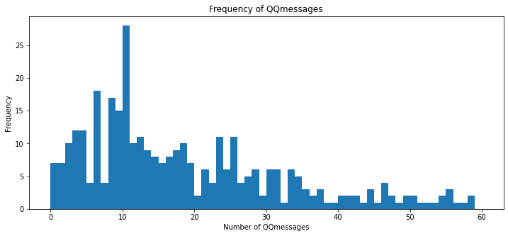
(2) 利用最大似然估计法求出参数
似然函数定义:
为了运算方便, 通常等式两边同取对数:
import matplotlib.pyplot as plt
import numpy as np
import pandas as pd
import scipy
import scipy.stats as stats
import scipy.optimize as opt
import statsmodels.api as sm
messages = pd.read_csv('QQ_data.csv') #读取数据
y_obs = messages['numbers'].values
np.seterr(invalid='ignore')
def poisson_logprob(mu, sign=-1):
"""
:params mu: 泊松模型的参数值
:params sign: 系数
:return: 观测数据的总似然值
"""
print(" 参数 mu: ", mu)
"""
方法 stats.poisson.logpmf(y_obs, mu=mu) 计算在给定点 y_obs 值上服从泊松分布(参数值为 mu)的概率对数值,
然后使用 np.sum 求和得到似然函数值
"""
return np.sum(sign * stats.poisson.logpmf(y_obs, mu=mu))
"""
方法 opt.minimize_scalar 通过不断迭代参数(mu), 求出(似然)函数的最小值,
因此在(似然)函数前加上负号(就可以求出(似然)函数的最大值)
https://vimsky.com/examples/usage/python-scipy.optimize.minimize_scalar.html
"""
freq_results = opt.minimize_scalar(poisson_logprob)
print("参数 mu 的估计值: %s" % freq_results['x'])
参数 mu: 0.0
参数 mu: 1.0
参数 mu: 2.6180339999999998
参数 mu: 5.2360680251559995
参数 mu: 5.273849359457559
参数 mu: 5.334980842922849
参数 mu: 9.032120508519583
参数 mu: 15.014218190203728
参数 mu: 14.555935077084984
参数 mu: 24.69345563048985
参数 mu: 15.014218190203728
参数 mu: 18.71135779832006
参数 mu: 20.996315778882625
参数 mu: 18.38937216738971
参数 mu: 18.18406664294854
参数 mu: 18.217827603959925
参数 mu: 18.219046315052577
参数 mu: 18.2189342781152
参数 mu: 18.218934914073003
参数 mu: 18.21893518372324
参数 mu: 18.218934644422767
参数 mu 的估计值: 18.218934644422767
(3) 直观地描述利用似然函数优化参数的过程
x = np.linspace(1, 60)
y_min = np.min([poisson_logprob(i, sign=1) for i in x])
y_max = np.max([poisson_logprob(i, sign=1) for i in x])
# 根据不同的 mu 值[1,60]，画出数据集的似然函数变化曲线
fig = plt.figure(figsize=(6,4))
plt.plot(x, [poisson_logprob(mu, sign=1) for mu in x])
plt.fill_between(x, [poisson_logprob(mu, sign=1) for mu in x], \
y_min,color='#348ABD',alpha=0.3)
# 画出似然函数值最大的红色竖线
plt.vlines(freq_results['x'], y_max, y_min, colors='red', linestyles='dashed')
plt.scatter(freq_results['x'], y_max, s=110, c='red', zorder=3)
plt.ylim(ymin=y_min, ymax=0)
plt.title('Optimization of $\mu$')
plt.xlabel('$\mu$')
plt.ylabel('Log probability of $\mu$ given data')
plt.show(){kind=link}
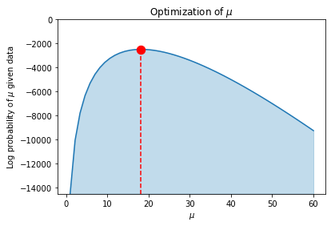
(4) 画出求得的泊松分布图
x_lim = 60
mu = int(freq_results['x'])
for i in np.arange(x_lim):
plt.bar(i, stats.poisson.pmf(mu, i), color='#348ABD') # 柱状图
plt.xlim(0, x_lim)
plt.ylim(0, 0.1)
plt.title('Estimated Poisson distribution for QQmessages') # QQ 消息数量的泊松分布估计
plt.xlabel('Number of QQmessages') # QQ 消息数量
plt.ylabel('Probability mass')
plt.legend(['$\mu$ = %s' % mu])
plt.show()
{kind=link}
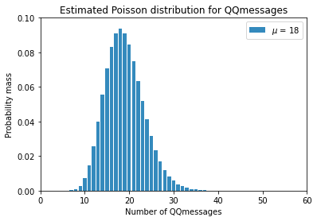
8.9 习题
(1) 编写朴素贝叶斯分类器
数据包含 3 中类别, 分别是{感冒, 过敏, 脑震荡}, 预测一个打喷嚏的建筑工人诊断结果
根据贝叶斯公式:
先验概率 = 后验概率 * 可能性函数
转换成分类任务的表达式:
则有:
P(脑震荡|打喷嚏,建筑工人)=P(脑震荡)\frac { { \color{ Red } { P(打喷嚏|脑震荡) } } \cdot P(建筑工人|脑震荡) } { P(打喷嚏,建筑工人) }
其中:
预测这个打喷嚏的建筑工人得了感冒
import numpy as np
import pandas as pd
from sklearn.naive_bayes import BernoulliNB
data = np.array([["护士", "打喷嚏", "感冒"], ["农夫", "打喷嚏", "过敏"], ["建筑工人", "头痛", "脑震荡"],
["建筑工人", "头痛", "感冒"], ["教师", "打喷嚏", "感冒"], ["教师", "头痛", "脑震荡"]])
df = pd.DataFrame(data, columns=["职业", "症状", "类别"])
df| 职业 | 症状 | 类别 | |
|---|---|---|---|
| 0 | 护士 | 打喷嚏 | 感冒 |
| 1 | 农夫 | 打喷嚏 | 过敏 |
| 2 | 建筑工人 | 头痛 | 脑震荡 |
| 3 | 建筑工人 | 头痛 | 感冒 |
| 4 | 教师 | 打喷嚏 | 感冒 |
| 5 | 教师 | 头痛 | 脑震荡 |
feature_codes = [{'护士': 0, '农夫': 1, '建筑工人': 2, '教师': 3},
{'打喷嚏': 0, '头痛': 1},
{'感冒': 0, '过敏': 1, '脑震荡': 2}]
for i in range(0, len(df.columns)):
df.iloc[:, i] = df.iloc[:,i].map(feature_codes[i])
df| 职业 | 症状 | 类别 | |
|---|---|---|---|
| 0 | 0 | 0 | 0 |
| 1 | 1 | 0 | 1 |
| 2 | 2 | 1 | 2 |
| 3 | 2 | 1 | 0 |
| 4 | 3 | 0 | 0 |
| 5 | 3 | 1 | 2 |
train_X = df[['职业', '症状']]
train_Y = df['类别']
train_X| 职业 | 症状 | |
|---|---|---|
| 0 | 0 | 0 |
| 1 | 1 | 0 |
| 2 | 2 | 1 |
| 3 | 2 | 1 |
| 4 | 3 | 0 |
| 5 | 3 | 1 |
test_X = pd.DataFrame(np.array([["2", "0"]]), columns=["职业", "症状"]) # 打喷嚏的建筑工人
test_X| 职业 | 症状 | |
|---|---|---|
| 0 | 2 | 0 |
clf = BernoulliNB()
clf.fit(train_X, train_Y)
clf.predict(test_X)array([0], dtype=int64)
9 随机变量的几种分布
先列个表格把几种分布整理下?
- 离散型
| 分布律 | 名称 | 记作 | 数学期望 | 方差 | 备注 |
|---|---|---|---|---|---|
| 0-1 分布 | n 为 1 的二项分布,例如抛一次硬币 | ||||
| 二项分布 | 事件{X=k}即为“n 次试验中事件 A 恰好发生 k 次” | ||||
| 几何分布 | 在 n 次伯努利试验中，试验 k 次才得到第一次成功的机率 | ||||
| 超几何分布 | 略 | 略 | 描述了从有限 N 个物件（其中包含 M 个指定种类的物件）中抽出 n 个物件，成功抽出该指定种类的物件的次数（不放回） | ||
| 泊松分布 | 适合于描述单位时间内随机事件发生的次数, 可用泊松分布近似地计算二项分布(时精确度较好) |
- 连续型
| 分布函数 | 名称 | 记作 | 数学期望 | 方差 | 备注 |
|---|---|---|---|---|---|
| 其他 | 均匀分布 | 也叫矩形分布 | |||
| $f(x | \mu,\sigma)=\frac{1}{\sqrt{2\pi \sigma^2}}e^{-\frac{(x-\mu)^2}{2\sigma^2}}$ | 正态分布 | |||
| 其他 | 指数分布 | 唯一具有"无记忆性"的分布, 在已知发生条件的下 | |||
| $f(x | n)=\frac{1}{x^{\frac{n}{2}\Gamma(\frac{n}{2})}}x^{\frac{n}{2}-1}e^{-\frac{x}{2}},x>0;0,x\le 0$ | 卡方分布 | n | 2n | |
| 略 | t 分布 | 0(偶函数) | 当时, 分布无限趋近于标准正态分布 | ||
| 略 | F 分布 | 设且相互独立, | |||
| 略 | 分布 | “指数分布”和“卡方分布”都是伽马分布的特例 | |||
| 略 | beta 分布 | 可以看作是一个概率的概率分布,实际上是对某个随机事件发生的概率估计,和实际上描述了随机事件发生或不发生的次数 |
9.1.3 应用 Python 函数库计算正态分布
1.产生正态随机变量
from scipy.stats import norm
print(norm.rvs(), end="\n\n") # 产生一个标准正态分布(均值为 0, 标准差为 1)的随机值
print(norm.rvs(size=10), end="\n\n") # 产生 10 个标准正态分布的随机值
print(norm.rvs(loc=10, scale=0.1), end="\n\n") # 产生一个均值为 10, 标准差为 0.1 的正态分布随机值-0.15606449742155645
[ 1.41915385e+00 9.05180924e-01 -1.65805601e+00 -8.70872873e-05
6.25728572e-01 3.07949177e+00 5.22917613e-01 -6.20181230e-01
-1.23960758e+00 7.47657082e-02]
9.901121362547995
2.计算正态分布概率
from scipy.stats import norm
print("P(X < 0.3) = {}".format(norm.cdf(0.3)))
print("P(-0.2 < X < 0.2) = {}".format(norm.cdf(0.2) - norm.cdf(-0.2)))P(X < 0.3) = 0.6179114221889526
P(-0.2 < X < 0.2) = 0.15851941887820603
3.标准正态分布函数图形
import numpy as np
import scipy.stats as stats
import matplotlib.pyplot as plt
import matplotlib.style as style
import matplotlib as mpl
from IPython.core.display import HTML
# PLOTTING CONFIG 绘图配置
"""
其实%matplotlib inline 这一句是 IPython 的魔法函数，可以在 IPython 编译器里直接使用，作用是内嵌画图，省略掉 plt.show()这一步，直接显示图像。
如果不加这一句的话，我们在画图结束之后需要加上 plt.show()才可以显示图像。
"""
%matplotlib inline
mpl.rcParams["font.sans-serif"] = ["Microsoft YaHei"]
mpl.rcParams['axes.unicode_minus'] = False
style.use('fivethirtyeight')
plt.rcParams["figure.figsize"] = (14, 7)
plt.figure(dpi=100) # 把分辨率调到 100
# PDF 概率密度函数
plt.plot(np.linspace(-4, 4, 100),
stats.norm.pdf(np.linspace(-4, 4, 100))
/ np.max(stats.norm.pdf(np.linspace(-3, 3, 100))),
)
plt.fill_between(np.linspace(-4, 4, 100),
stats.norm.pdf(np.linspace(-4, 4, 100))
/ np.max(stats.norm.pdf(np.linspace(-3, 3, 100))),
alpha=.15,
)
# CDF 累积分布函数
plt.plot(np.linspace(-4, 4, 100),
stats.norm.cdf(np.linspace(-4, 4, 100)),
)
# LEGEND 图例
plt.text(x=-1.5, y=.7, s="pdf (normed)", rotation=65,
alpha=.75, weight="bold", color="#008fd5")
plt.text(x=-.4, y=.5, s="cdf", rotation=55, alpha=.75,
weight="bold", color="#fc4f30")
# TICKS 坐标轴
plt.tick_params(axis = 'both', which = 'major', labelsize = 18)
plt.axhline(y = 0, color = 'black', linewidth = 1.3, alpha = .7)
# TITLE 标题
plt.text(x = -5, y = 1.25, s = "正态分布 - 概述",
fontsize = 26, weight = 'bold', alpha = .75)
plt.text(x = -5, y = 1.1,
s = ('下图是归一化的概率密度函数 (pdf)以及正态分布随机变量 $ y \sim \mathcal{N}(\mu,\sigma) $的累计密度函数(cdf),'
'其中 $ \mu = 0 $ , $ \sigma = 1$.'),
fontsize = 19, alpha = .85)Text(-5, 1.1, '下图是归一化的概率密度函数 (pdf)以及正态分布随机变量 $ y \\sim \\mathcal{N}(\\mu,\\sigma) $的累计密度函数(cdf),其中 $ \\mu = 0 $ , $ \\sigma = 1$.')
{kind=link}
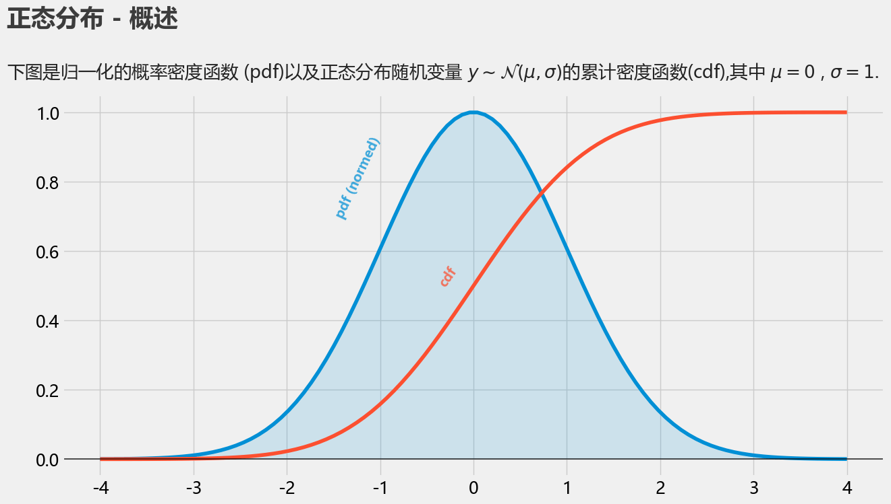
9.3 泊松分布
当二项分布中 n 较大, p 较小时, 分布近似于泊松分布, 可以减少计算量
若服从参数为的二项分布,则近似地服从参数为的泊松分布
泊松分布适合描述一段时间(空间)内随机事件发生次数的概率分布. 如一段时间内到达地铁站的人数等.
9.6 Beta 分布
Beta 分布可以看作一个概率的概率分布.这个推断实际上是一个后验概率, 可以用贝叶斯公式转换成先验概率的计算, 公式如下:
定义 9.8 给定参数和取值范围为的随机变量的概率密度函数为
其中称为 Beta 函数, 可以表示为
Beta 分布有以下特点:
-
Beta(1, 1)等价于 U(0, 1)
-
作为概率的概率分布, 上对 x 的积分必定为 1
-
x 实际上是对某个随机事件发生的概率估计, 和实际上描述了随机事件发生或不发生的次数
-
Beta 分布是一种后验分布和先验分布的分布律相同的分布, 不同的只是参数发生了变化
-
Beta 分布可以看作多次进行二项分布实验所得到的分布, 可以对随机事件发生的概率的分布进行计算
9.7 综合实例——估算棒球运动员的击中率
# IMPORTS
import numpy as np
import scipy.stats as stats
import matplotlib.pyplot as plt
import matplotlib.style as style
from IPython.core.display import HTML
# PLOTTING CONFIG
%matplotlib inline
style.use('fivethirtyeight')
plt.rcParams["figure.figsize"] = (14, 7)
plt.figure(dpi=100)
# PDF
# 中 82, 不中 220
plt.plot(np.linspace(0, 1, 500),
stats.beta.pdf(np.linspace(0, 1, 500),a=82,b=220),label='a=82,b=220', \
linewidth=1
)
# 中 84, 不中 220
plt.plot(np.linspace(0, 1, 500),
stats.beta.pdf(np.linspace(0, 1, 500),a=84,b=220),label='a=84,b=220', \
linewidth=2, linestyle='dashed'
)
# 中 182, 不中 420
plt.plot(np.linspace(0, 1, 500),
stats.beta.pdf(np.linspace(0, 1, 500),a=182,b=420),label='a=182,b=420', \
linewidth=3
)
#AXISES LABEL
plt.xlabel('X',size=20)
plt.ylabel('Density of Beta',size=20)
# TICKS
plt.tick_params(axis = 'both', which = 'major', labelsize = 18)
plt.xticks(np.linspace(0,1,11))
#SHOWING TEXT IN CANVAS
plt.legend()
plt.show(){kind=link}
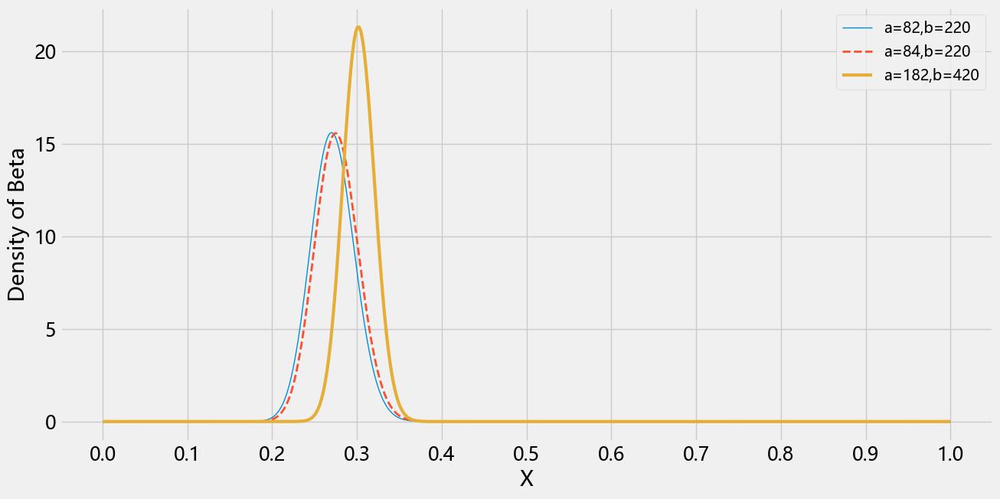
9.9 习题
(1) 已知正态随机变量,如果有, , 对应的、分别称为正态分布的下分位点, 求、
from scipy.stats import norm
x1 = norm.ppf(0.1) # 累计密度函数的反函数
x2 = norm.ppf(0.05)
x1, x2(-1.2815515655446004, -1.6448536269514729)
(2) 对于标准正态分布, 绘制正态分布曲线及下 0.05 分位点
import matplotlib.pyplot as plt
from scipy.stats import norm
import numpy as np
plt.plot(np.linspace(-3, 3, 100), norm.pdf(np.linspace(-3, 3, 100))) # 绘制曲线
plt.fill_between(np.linspace(-3, norm.ppf(0.05), 50),
norm.pdf(np.linspace(-3, norm.ppf(0.05), 50)),
alpha=.15,
)
plt.plot([x0, x0], [y0, 0], 'k--', lw=2.5) # 绘制黑色虚线
plt.annotate("x2= %.2f" % x0, xy=(x0, y0), xycoords='data', xytext=(+30, +30),
textcoords='offset points', fontsize=16, arrowprops=dict(arrowstyle='->',
connectionstyle='arc3, rad=.2')) # 输入注释
plt.show() # 显示图片 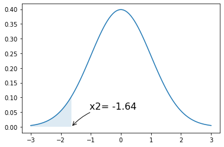
{kind=link}